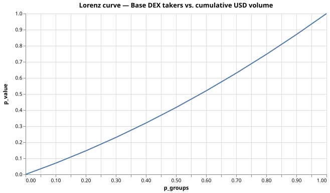

集中度指標
Concentration suite
| metric | value |
|---|---|
| top-1 | 0.13% |
| top-5 | 0.65% |
| top-10 | 1.30% |
| top-25 | 3.26% |
| top-50 | 6.51% |
| HHI | 0.0010 |
| Gini | 0.111 |
ローレンツ曲線
Lorenz curve

注意
Caveats
pnpm seed の合成データです。実出来高で再現するには chainq pull --chain base を使ってください。
Synthetic data from pnpm seed. Replace with chainq pull --chain base for real volume.